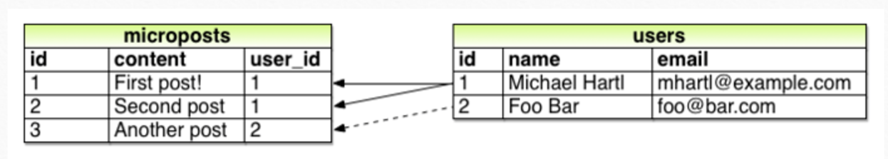

Welcome

$ sudo apt-get update
$ sudo apt-get install curl
$ curl -L https://get.rvm.io | bash -s stable
$ rvm install 2.2.2
$ gem install bundler
Hello world!
$ irb irb(main):010:0> def hi irb(main):011:1> puts "Hello World!" irb(main):012:1> end :hi
Function
> def hi(name)
> puts "Hello #{name}!"
> end
:hi
> hi("Matz")
Hello Matz!
nil
Class
class Greeter
def initialize(name = "World")
@name = name
end
def say_hi
puts "Hi #{@name}!"
end
def say_bye
puts "Bye #{@name}, come back soon."
end
end
Object
greeter = Greeter.new("Pat")
greeter.say_hi
Hi Pat!
nil
greeter.say_bye
Bye Pat, come back soon.
nil

Install Rails
$ gem install rails -v 5.0.1Your first App
$ rails _5.0.1_ new hello_world
$ cd hello_world
$ sudo apt-get install nodejs #if there is an error
$ bundle install
$ rails server
Your first App
app/controllers/application_controller.rb
class ApplicationController < ActionController::Base
protect_from_forgery with: :exception
def hello
render html: "hello, world!"
end
end
Routing
config/routes.rb
Rails.application.routes.draw do
root 'application#hello'
end
Version Control
$ sudo apt-get install git-all
$ git config --global user.name "Your Name"
$ git config --global user.email your.email@example.com
Let's make some Tweeter©
$ cd
$ rails _5.0.1_ new tweeter_app
$ cd tweeter_app
Or
$ git clone https://github.com/multunus/rails-workshop
bit.ly/rorwsp
Model-View-Controller
Users
| id | a unique identifier |
| name | name of the user |
| email id of the user |
Microposts
| id | a unique identifier |
| content | content of the post |
| user_id | the unique identifier of the user |
Day 1: Let there be light... or User
$ rails generate scaffold User name:string email:string
$ rake db:migrate
Routes and Actions for User
| GET | /users | index | page to list all users |
| GET | /users/1 | show | page to show user with id 1 |
| GET | /users/new | new | page to make a new user |
| GET | /users/1/edit | edit | page to edit user with id 1 |
More Actions
| POST | /users | create | create a new user |
| PATCH | /users/1 | update | update a user 1 |
| DELETE | /users/1 | destroy | delete user with id 1 |
Magically a route appears!
config/routes.rb
Rails.application.routes.draw do
resources :users
end
Day 2: And the User was without Micropost
$ rails generate scaffold Micropost content:text user_id:integer
$ rake db:migrate
Routes and Actions for Micropost
| GET | /microposts | index | page to list all microposts |
| GET | /microposts/1 | show | page to show post with id 1 |
| GET | /microposts/new | new | page to make a new post |
| GET | /microposts/1/edit | edit | page to edit post with id 1 |
More Actions
| POST | /microposts | create | create a new post |
| PATCH | /microposts/1 | update | update a post 1 |
| DELETE | /microposts/1 | destroy | delete post with id 1 |
(Not so) Magically a route appears!
config/routes.rb
Rails.application.routes.draw do
resources :microposts #new resource
resources :users
end
Where the @#$%! is my micro post?
app/models/micropost.rb
class Micropost < ApplicationRecord
validates :content, length: { maximum: 140 }
end
But, User has many Micropost!
app/models/user.rb
class User < ApplicationRecord
has_many :microposts
end
And a Micropost belongs to a User
app/models/micropost.rb
class Micropost < ApplicationRecord
belongs_to :user #microposts belongs to user
validates :user, presence: true # micropost exists only if user exist
validates :content, length: { maximum: 140 }
end
Association
Why u no type content?
app/models/micropost.rb
class Micropost < ApplicationRecord
belongs_to :user
validates :user, presence: true
validates :content, length: { maximum: 140 }, presence: true # micropost should have some content
end
Static pages? Rails can do that for you
$ rails generate controller StaticPages home help
Static pages
config/routes.rb
Rails.application.routes.draw do
get 'static_pages/home'
get 'static_pages/help'
root 'application#hello'
end
app/views/static_pages/home.html.er
Welcome to Tweeter
This is the home page for my Twitter application.
<%= link_to 'New User', new_user_path %>
<%= link_to 'New Micropost', new_micropost_path %>